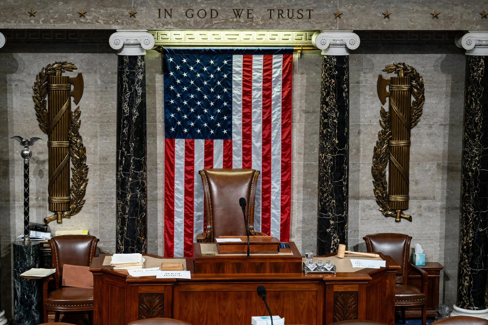

The Speaker of the United States House of Representatives, commonly known as the Speaker of the House, is the presiding officer of the United States House of Representatives. The office was established in 1789 by Article I, Section 5 of the U.S. Constitution. The Speaker is usually the leader of the majority party and is second in the presidential line of succession, after the Vice President.

The Speaker's rostrum and gavel in the U.S. House of Representatives chamber.
Unlike speakers in many Westminster systems, the U.S. Speaker is an openly partisan figure: the combined roles include presiding officer of the House, leader of the majority party, and head of the institution's administration. The Speaker controls the legislative agenda through recognition of members, referral of bills to committees, appointment of committee chairs (in concert with party steering committees), and influence over the Rules Committee, which sets terms of debate. The Speaker rarely votes except to break ties, and presides personally mainly on ceremonial or major occasions, delegating routine presiding to members of the majority party.
The Speaker is elected by roll-call vote of the whole House on the first day of each new Congress and whenever a vacancy occurs. A majority of votes cast is required; in January and October 2023, multiple ballots were needed — the January 2023 election took 15 ballots, the first multi-ballot election in a century — and in October 2023 the House voted to remove Speaker Kevin McCarthy, the first successful motion to vacate in U.S. history.
House History, Art & Archives (history.house.gov); Congressional Research Service reports.